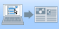

Нажмите одну из представленных ниже ссылок, чтобы перейти к описанию.
|

|
 См.
См. Как открыть вкладку [Профиль]:
Нажмите [ ] (Пуск) → [Устройства и принтеры].
] (Пуск) → [Устройства и принтеры].
] (Пуск) → [Устройства и принтеры].Выше указаны действия в ОС Windows 7 и Server 2008 R2.
В ОС Windows 10: нажмите [Параметры] → [Устройства] → [Принтеры и сканеры] → [Сопутсвующие параметры] → [Устройства и принтеры].
В ОС Windows 8, 8.1, Server 2012 и Server 2012 R2: на рабочем столе выдвиньте боковую панель с правой стороны экрана и выберите пункты [ Параметры] → [Панель управления] → [Устройства и принтеры].
Параметры] → [Панель управления] → [Устройства и принтеры].
Параметры] → [Панель управления] → [Устройства и принтеры].В ОС Windows Vista и Server 2008: нажмите [] (Пуск) → [Панель управления] → [Принтеры].
] (Пуск) → [Панель управления] → [Принтеры].В ОС Windows Server 2003 и Server 2003 R2: нажмите [Пуск] → [Принтеры и факсы] (или [Пуск] → [Панель управления] → [Принтеры и другое оборудование] → [Принтеры и факсы]).
Щелкните правой кнопкой мыши значок используемого притера → нажмите [Свойства принтера] (или [Свойства]).
Выберите вкладку [Профиль].